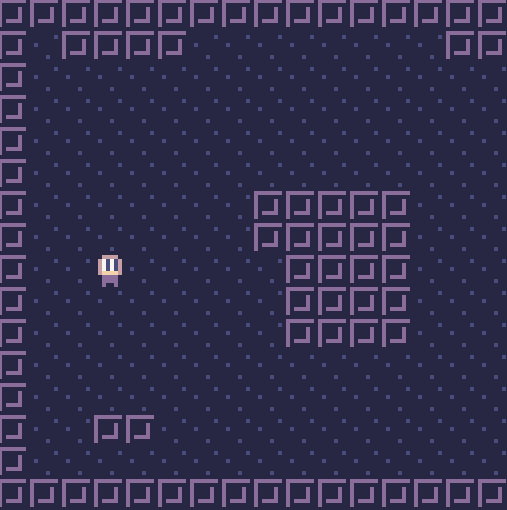
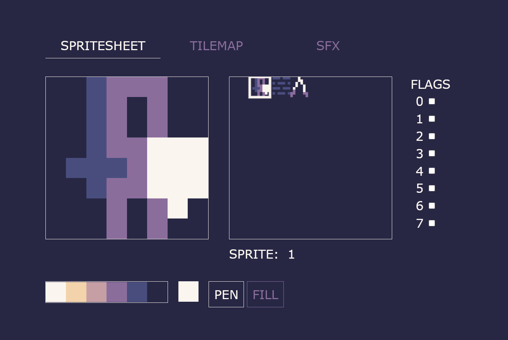
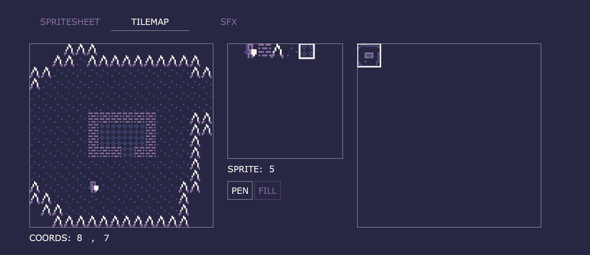
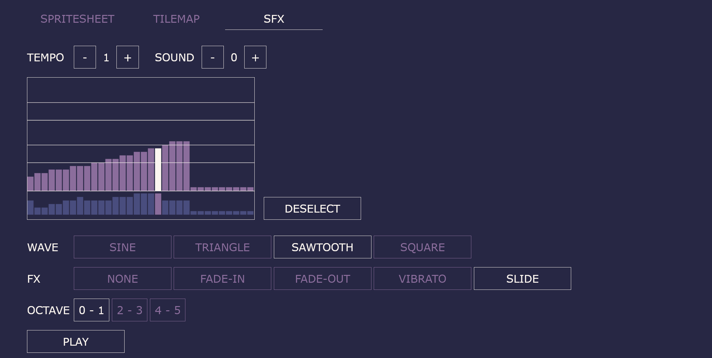

Thank you for checking out sparky! Just a quick heads up: sparky is in an early stage of development. It's functional, but may include rough edges and bugs. It is, however updated (reasonably) often, and updated a lot, so these keep disappearing even as I write these words.
Sparky is a set of simple open source tools to create
tiny web games in Javascript

Sparky is inspired by Pico-8, the Pyxel Engine and similar fantasy consoles and fantasy-console-likes. It provides a simple set of tools to draw sprites, tilemaps, create sounds and write code, along with a tiny Javascript library with API modelled after the Pico-8.
Simple and easy to use
The tools are simple and there is no setup, as the environment is self-contained. All you need is open the editor in a browser, make your game and click "export".
Constraints to fuel creativity...
Taking inspiration from fantasy consoles, sparky provides you with limited resources to work with. This way it's hard to get too carried away, and you can finish your game quickly.
...but you can cheat!
At its heart, Sparky is just a library, so it does not impose any code limitations. You can also download the game template and code the game externally, including multiple sets of assets if you really want.
It's just plain Javascript
No complex build tools or advanced features. Make the entire game in the browser and export with one click - or simply plug in the library in a script tag, along with the data generated from the editor and your own code, just like in the olden days.
Batteries included
Sparky gives you all the tools you need to create tiny pixel art games. The game editor allows you to create assets and save them on your machine, as well as a code editor and the ability to export the game. The library provides basic functions for display, input, sounds and a game loop.
It's really tiny
Game size is measured in kilobytes. A game is just an html file that you can double click and launch in any browser.
...and it's open source
Every last bit of code, including this website, is free software, licensed under the MIT licence. So pop the hood and hack away to your heart's content.
Game editor
Use the editor to create images, maps, sounds and code for your game. Export the game straight from the editor, or save it as a javascript file that you just embed into your own HTML together with the library and your own code.
Use the sprite editor to draw your sprites
You get a total of 256 8x8 pixel sprites and a 6 color palette. You can then draw them in your game by simply referring to their numbers.
Use the tilemap editor to create maps using the sprites you've drawn
You get a total of 8x8 screens of 16x16 tiles. Use the sprites you've drawn in the sprite editor to fill your maps. You can also change the map programmatically in game code by simply referring to tile coordinates. Drawing a map in your game is as simple as map().
Use the SFX editor to make bleeps and bloops
You can make 32 sound effects, each consisting of 32 segments. There are several waveforms and special effects to spice things up. You can also make some simple music in the editor, although a more advanced tracker-like music editor is in the works as we speak.
Library
The sparky library is just a bunch of functions to make it as easy and painless as possible to display things on the screen, read input and make some noise. It abstracts away the chores and many decisions that would lead to analysis paralysis. All games use a 128x128 resolution, a fixed 6 color palette and a limited set of resources you create in the editor. This way it takes very little code to get up and running.
It's just Javascript, so you can use any sort of library and built in functionality you wish. The opportunities for creativity are endless.